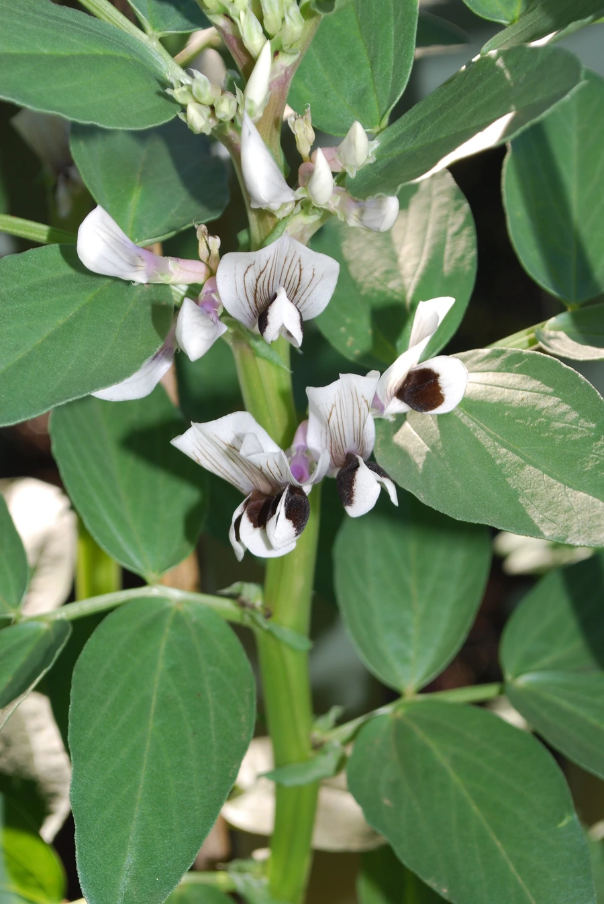

农作物与经济植物 · 植物界
蚕豆 Vicia faba

蚕豆的种子扁平宽大，可煮食、炒食和制酱，是重要的食用豆类，耐寒性强，常作为南方冬季作物种植。
- 分类
- 门被子植物门纲双子叶植物纲目豆目科豆科属野豌豆属
- 栖息环境
- 温带与亚热带平原，喜凉爽湿润，耐寒性强
- 地理分布
- 原产地中海与西亚，现中国、欧洲、北非等地栽培
- 保护级别
- 暂无评估（栽培作物）
物种志
蚕豆是一年生或二年生草本，株高 0.5–1.5 m，茎直立、粗壮、方形中空。叶片为偶数羽状复叶，小叶椭圆形，肥厚，托叶有紫色斑点。花白色带紫斑，蝶形，荚果肥厚，内含 2–6 粒种子，种子扁椭圆形，种皮浅绿或褐色。根系有根瘤，能固氮。
蚕豆原产地中海与西亚一带，栽培历史约 5000 年，是中国重要的食用豆类之一，又称胡豆、罗汉豆。它喜凉爽湿润气候，耐寒性强，可以在冬季或早春种植，是南方稻田冬作的重要作物。蚕豆种子富含蛋白质与淀粉，可煮食、炒食、制豆瓣酱，也是制作粉丝和酱油的原料；嫩豆可作蔬菜，茎叶可作绿肥与饲料。蚕豆根瘤固氮能力强，是良好的养地作物。
形态与习性
- 株高0.5–1.5 m，茎方形中空
- 叶偶数羽状复叶，托叶有紫斑
- 花白色带紫斑，蝶形
- 种子扁椭圆形，每荚 2–6 粒
- 用途煮食、豆瓣酱、粉丝
- 特性耐寒，根瘤固氮能力强
趣味知识
- 蚕豆种子扁平宽大，所以有“胡豆”“罗汉豆”的别名。
- 蚕豆耐寒，南方常在水稻收获后的冬闲田里种植。
- 蚕豆的根瘤固氮能力强，是很好的养地作物。